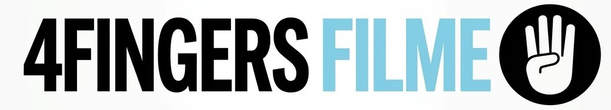
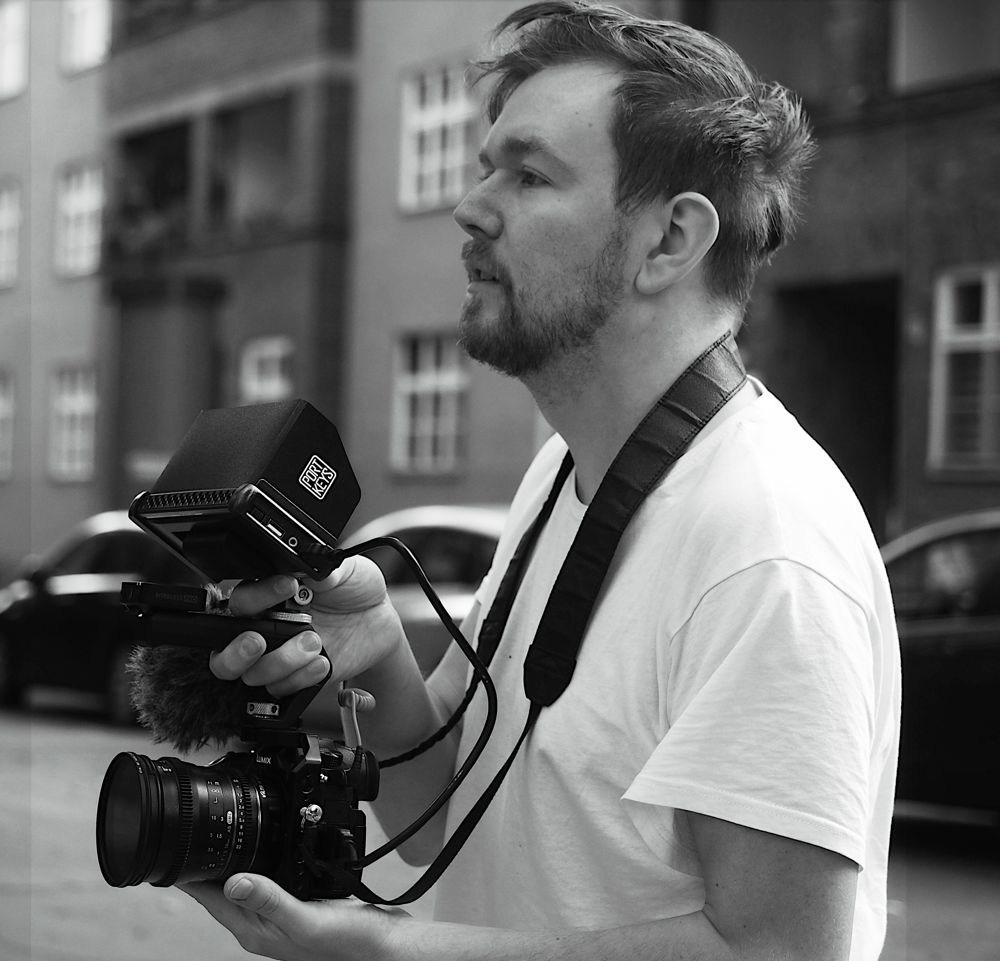

Farben AT (2026)
Dokumentarfilm über eine Musikerin mit multipler Synästhesie

Dokumentarfilm über eine Musikerin mit multipler Synästhesie
Live-Gig der Skramz-Pop-Band Knarre beim Fair Weather Fest Bremen 2026
Kurzspielfilm über häusliche Gewalt während des ersten Covid-19-Lockdowns
Dokumentarfilm über eine Bauernfamilie in einem abgelegenen Dorf in Kirgistan
Kurzspielfilm über einen gehörlosen Metzger
Testimonial und Eventfilm für eine internationale Online-Musikschule
Reportage über Wohnungslosigkeit und Notunterkünfte in Berlin
4fingersfilme produziert professionelle Videos – von Dokumentar- und Imagefilmen über Eventfilme bis hin zu hochwertigem Social-Media-Content. Am liebsten arbeiten wir dokumentarisch mit Fokus auf soziale Themen und authentischen Charakteren mit eindrucksvollen Lebensgeschichten. Unsere besondere Spezialisierung liegt auf Schauspielvideos. Dabei kreieren wir Formate wie Demoszenen, Improszenen oder About Me's, die die Aufmerksamkeit von Agenturen und Caster:innen gewinnen. Von der Konzeption über den Dreh bis hin zu Schnitt und Nachbearbeitung übernehmen wir alles Wesentliche.
Hinter der 4Fingersfilme steht der Filmemacher und Videograf Mariusz Staubach aus Berlin. Neben eigenen fiktionalen und dokumentarischen Projekten als Regisseur und Drehbuchautor sammelte er wertvolle Set-Erfahrung als Regieassistent, unter anderem bei großen internationalen Produktionen (z. B. Matrix Resurrections, Inventing Anna, 1899 u. v. m.). Durch sein langjähriges Interesse für den post-sowjetischen Raum erlernte Mariusz die russische Sprache, um Protagonisten und Interviewpartnern auf Augenhöhe gegenüberzutreten. Aktuell arbeitet er an seinem ersten fiktionalen Spielfilm.
